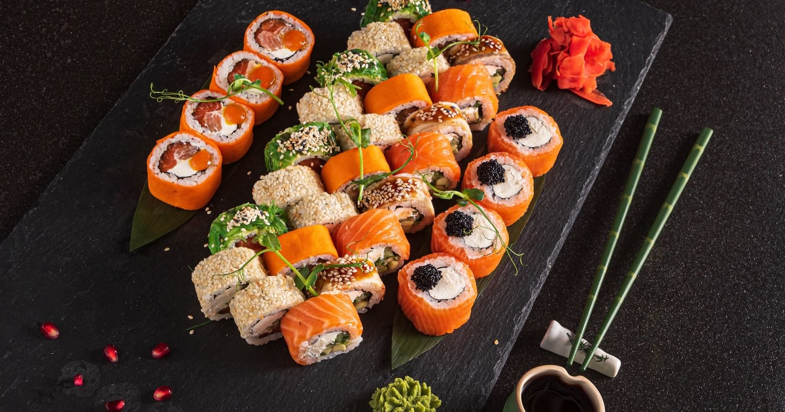

Sushi is Japan's most famous culinary representative, typically made with rice and fillings which have been rolled inside a sheet of dry seaweed. However, the term sushi is actually an umbrella term covering a wide range of subvarieties which can be made with a myriad of different ingredients and in as many forms and presentations.
Meal prep time : 20 minutes
Servings : 10